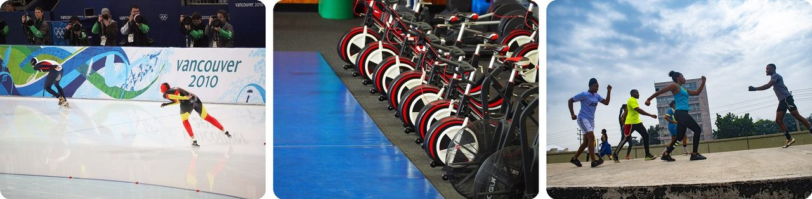
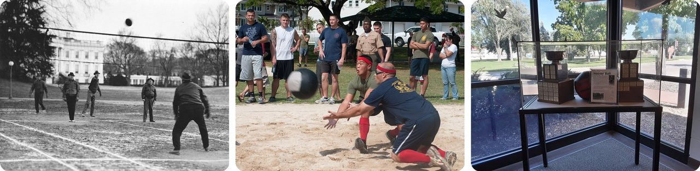

🌍 十大 在家就能玩的健身与儿童快速运动
2026年11月20日
1. 🇷🇺 壶铃最早是市场上的秤砣
 在 18 世纪的俄罗斯，girya（一种带把手的铸铁球）可不是健身器材。商贩在市场上拿它当砝码，用来称粮食。
在 18 世纪的俄罗斯，girya（一种带把手的铸铁球）可不是健身器材。商贩在市场上拿它当砝码，用来称粮食。
到了 19 世纪，马戏团的大力士开始当众甩它表演，很快大家也把它当运动来练。经典的重量是一 普特（pood），这是俄罗斯的老单位，大约 16 公斤（36 磅），差不多是一个 4 岁小孩的体重。
妙就妙在：壶铃大部分的重量都在你的手掌外面，而不是握在手心里。所以甩壶铃的时候，力量来自把髋部猛地往前一顶，而不是靠胳膊往上提。
说白了，它就是一个从菜市场秤上“跑去”健身房的砝码。
2. 🏴 哑铃其实是一只永远不响的“铃”
 17 世纪的英格兰，敲教堂钟成了一种流行的爱好，人们开始在家里装上模仿拉钟动作的健身装置。它有两根交叉的木杆，两头挂着重物，套在一根轴上转，下面垂着一根绳子让人拉。
17 世纪的英格兰，敲教堂钟成了一种流行的爱好，人们开始在家里装上模仿拉钟动作的健身装置。它有两根交叉的木杆，两头挂着重物，套在一根轴上转，下面垂着一根绳子让人拉。
拉绳子的感觉就像在敲真正的钟，可上面根本没有钟，所以一点声音也没有。在老英语里，不出声就叫 “dumb”（哑）。1711 年，作家约瑟夫·艾迪生在一本叫《旁观者》的杂志里，写到自己用“dumb bell”锻炼。
不过举手持重物的点子还要古老得多：古希腊人用一种叫 halteres 的手持重物，甚至跳远时都拿着它。
换句话说，它就是把钟拿掉以后的敲钟练习。
3. 🇺🇸 波比跳原本是一个快速的心脏测试
 1939 年，一位叫罗亚尔·H·伯比（Royal H. Burpee）的美国科学家，为了在哥伦比亚大学读博士发明了这个动作。他的版本只有四步：蹲下双手撑地，双脚往后一踢变成平板支撑，再把脚跳回来，然后站起来。
1939 年，一位叫罗亚尔·H·伯比（Royal H. Burpee）的美国科学家，为了在哥伦比亚大学读博士发明了这个动作。他的版本只有四步：蹲下双手撑地，双脚往后一踢变成平板支撑，再把脚跳回来，然后站起来。
只要做 四次 就行。接着他会测你的心跳，看心脏多快能平静下来，这能看出心脏泵血的能力好不好。
1942 年，美国陆军把它变成了速度测试：20 秒能做几个？8 个算差，13 个以上算优秀。现在的纪录是一分钟 38 个胸部贴地的波比跳，差不多每 1.6 秒就一个。
一个医生的体检项目，最后变成了大家又爱又恨的动作。
4. 🇺🇸 开合跳的名字来自一个拉线玩具
 “Jumping jack”原本是一种木头做的拉线小人玩具。一拉绳子，它的胳膊和腿就向两边甩开；一松手，又“啪”地收回来。
“Jumping jack”原本是一种木头做的拉线小人玩具。一拉绳子，它的胳膊和腿就向两边甩开；一松手，又“啪”地收回来。
人们做同样的动作当运动，就借用了这个玩具的名字。有个流传很广的故事说，1885 年，西点军校一位叫约翰·“黑杰克”·潘兴的高年级学员，让新生一边做这个动作，一边由他假装拉一根看不见的绳子。
纪录是 一分钟 136 个开合跳，2023 年在尼泊尔创下的。也就是每秒两个还多。
你每做一个，都是在扮演一个拉线玩偶。
5. 🇯🇵 一整套 Tabata 训练只要 4 分钟

1996 年，日本教授田畑泉在奥运速滑运动员身上测试了一种超短训练：在健身单车上用尽全力骑 20 秒，休息 10 秒，重复 8 次。加起来正好 4 分钟。6 周之后，这些运动员耐力的提高，跟另一组每天匀速骑 60 分钟的人差不多。而且只有 4 分钟那一组，短时间爆发冲刺的能力也变强了。
当年研究用的是单车，但现在这种“练 20 秒、歇 10 秒”的节奏被用在各种各样的动作上。
可以把它想成：一整套训练，比一首流行歌还短。
6. 🇺🇸 双绳跳绳是在纽约街头用晾衣绳长大的
 双绳跳绳（Double Dutch）是两个人朝相反方向甩两根长绳，跳的人在中间蹦。20 世纪 40、50 年代，纽约市的黑人女孩把它变成了街角运动，经常直接拿 晾衣绳 当跳绳。
双绳跳绳（Double Dutch）是两个人朝相反方向甩两根长绳，跳的人在中间蹦。20 世纪 40、50 年代，纽约市的黑人女孩把它变成了街角运动，经常直接拿 晾衣绳 当跳绳。
70 年代初，两位纽约警察尤利西斯·威廉斯和戴维·沃克写下了正式规则，1974 年举办了第一场正式比赛。到了 2009 年，它成了纽约市公立高中的校队项目。
这个名字可能来自英语老俚语：“double Dutch”指听起来完全是胡言乱语的话，开玩笑说那两根绳子看着有多让人眼花。
简单说，就是绳子翻倍、节奏也翻倍的跳绳。
7. 🇦🇺 呼啦圈热潮是从澳大利亚的竹圈开始的
 澳大利亚悉尼有一位老师，让学生在体育课上把竹圈套在腰上转。竹圈火到不行，一家澳大利亚玩具公司在 1957 年开始用塑料做，那一年就卖了 40 万个。
澳大利亚悉尼有一位老师，让学生在体育课上把竹圈套在腰上转。竹圈火到不行，一家澳大利亚玩具公司在 1957 年开始用塑料做，那一年就卖了 40 万个。
后来美国公司 Wham-O 也做了自己的塑料版，用夏威夷草裙舞（hula）和它扭动的胯部来命名，叫“hula hoop”。1958 年一个卖 1.98 美元。
接下来的事太疯狂了：不到四个月卖出 2500 万个。差不多每天卖 20 万个。
一个体育课玩具，在还没有互联网的年代就“爆红”了。
8. 🇺🇸 蹦床的名字来自西班牙语的“跳水板”
 1936 年，爱荷华大学的两名体操运动员乔治·尼森和拉里·格里斯沃尔德，看到马戏团的空中飞人从安全网上弹起来。他们把帆布用螺旋弹簧绷在铁框上，做出了第一张现代蹦床。
1936 年，爱荷华大学的两名体操运动员乔治·尼森和拉里·格里斯沃尔德，看到马戏团的空中飞人从安全网上弹起来。他们把帆布用螺旋弹簧绷在铁框上，做出了第一张现代蹦床。
30 年代末在墨西哥巡回表演时，尼森听到西班牙语单词 trampolín，意思是“跳水板”，就拿来当了名字。
意外的是：床面本身几乎不怎么伸缩。是四周的弹簧把能量存起来，再把你弹上去。二战期间，美国海军甚至用蹦床帮飞行员练习在空中翻滚时分清上下。
所以弹力藏在弹簧里，而不是在床面上。
9. 🇺🇸 一位美国总统的医生，发明了一个用 6 磅重球的游戏

赫伯特·胡佛在 1928 年赢得大选后，他的医生乔尔·T·布恩想让他保持健康，于是发明了 胡佛球（Hooverball），灵感来自胡佛在一艘海军战舰上看到水兵玩的游戏。它很像排球，只不过你要接住一个沉甸甸的药球，再把它扔回 8 英尺（2.4 米）高的网对面。球大约重 6 磅（2.7 公斤），跟一个小号保龄球差不多。计分方法和网球一样。
现在还有人在玩：爱荷华州的西布兰奇每年都会举办全国锦标赛。
想象一下：打排球时，你得接住一个保龄球。
10. 🇨🇿 平板支撑的世界纪录比一整天上学还长
 平板支撑看起来很简单：用前臂和脚尖撑住，保持俯卧撑的姿势，一动不动。可正因为不动，你的肚子、后背和肩膀的肌肉一直都在用力。
平板支撑看起来很简单：用前臂和脚尖撑住，保持俯卧撑的姿势，一动不动。可正因为不动，你的肚子、后背和肩膀的肌肉一直都在用力。
2023 年 5 月，捷克的约瑟夫·沙莱克撑了 9 小时 38 分 47 秒。比一整天的上学时间还长。
而且它的好处不只是练腹肌。一项汇总了 270 个研究的大型分析发现，平板支撑、靠墙静蹲这类“保持不动”的运动，降血压的效果比其他运动都好。
你可以把它当成：跟地板来一场“大眼瞪小眼”比赛。
趣闻
壶铃和哑铃还有一个“表亲”：印度棒，一种木棒，据说最早是印度和波斯的士兵挥舞它来练力气。传统的印度棒最重可达 35 公斤（77 磅），后来英国军队采用了只有 2 公斤（4.4 磅）的轻便版，挥棒甚至在 1904 年和 1932 年的奥运会上当过比赛项目。到了 19 世纪，一个叫德威特·库克的人开始拿它来抛接杂耍，于是有了今天表演者抛来抛去的杂耍棒。马戏和杂耍里，还藏着好多这样的惊喜。
图片来源（Wikimedia Commons）
- #1: Kettlebell truebalance romeike.jpg by Detlef Romeike, CC BY-SA 2.5
- #1: Competition kettlebell 16 kilo.jpg by Knuckles, CC BY-SA 3.0
- #1: Kettlebell voor fitness 6 kg.jpg by Richardkiwi, CC BY-SA 4.0
- #2: Colorful dumbbells of various sizes.jpg by Ser Amantio di Nicolao, CC BY-SA 4.0
- #2: Rudolf Ismayr's Dumbbells, 1936.jpg by New York-air, CC BY-SA 4.0
- #2: Kurzhanteln 2 x 15 kg 2v2.jpg by Singlespeedfahrer, CC0
- #3: Airborne Burpee.jpg by Marine Corps photo by Sgt. Ryan Young, Public domain
- #3: Burpee 2 Squat.jpg by Taco fleur, CC BY-SA 4.0
- #3: CrossFit Open 12.1 - Burpees - Chris, Shane, and Adam, and Matt.jpg by Travis Isaacs (photos · photo sets), CC BY 2.0
- #4: Elementary school students conduct jumping jacks to warm up USMC-120214-M-MA421-288.jpg by Lance Cpl. Ryan M. Joyner, Public domain
- #4: Marie Anker um 1875.jpg by upload by Adrian Michael, Public domain
- #4: John Walters, right, a physiologist with the Health and Wellness Center, leads children in jumping jacks prior to participating in the Children's Mobility Line at Dover Air Force Base, Del., Aug. 22, 2013 130822-F-BO262-028.jpg by Roland Balik, Public domain
- #5: Women's 5000m Speed Skating Pair 8.jpg by Robert Scoble, CC BY 2.0
- #5: Stationary bikes at a gym.jpg by KeepActive Australia from Melbourne, VIC, Australia, CC BY-SA 4.0
- #5: A session of a boot camp exercise at Orji Flyover Owerri, Imo State.jpg by Dolphyb, CC BY-SA 4.0
- #6: Michelle Obama and kids double-dutch jump rope - P071511CK-0303 (6047842208).jpg by The White House from Washington, DC, Public domain
- #6: Double Dutch - The Ropestylers 3.jpg by Brandon Mongila, CC BY-SA 4.0
- #6: Elders of National Double Dutch League Performing.jpg by Kbwords, CC BY-SA 4.0
- #7: Girl twirling Hula Hoop, 1958.jpg by GeorgeLouis, CC BY-SA 3.0
- #7: One hula hoop (flickr) by quinn.anya, CC BY-SA 2.0
- #7: Hula Hoop OBS.jpg by Schorle, CC BY-SA 4.0
- #8: Girl jumping on trampoline with belts.jpg by Dmitry Rozhkov, CC BY-SA 3.0
- #8: Trampoline jump king.JPG by Øyvind Holmstad, CC0
- #8: Dian Nissen jumping at a trampoline park.jpg by Triffis, CC BY-SA 3.0
- #9: Hooverball Game on White House Lawn - DPLA - 7489e19fdef6a93ca88e3fe4f391f0c2.jpg by National Archives and Records Administration. Office of Presidential Libraries. Herbert Hoover Library. 4/1/1985, Public domain
- #9: MALS-24 latches onto Hooverball 130125-M-RT812-198.jpg by Christine Cabalo, Public domain
- #9: Herbert Hoover NHS - Hooverball trophies.jpg by Ser Amantio di Nicolao, CC BY-SA 4.0
- #10: Plank.jpg by Jaykayfit, CC BY-SA 3.0
- #10: Woman performing plank exercise at home gym.jpg by Shixart1985, CC BY 2.0
- #10: Medicine Ball Plank.jpg by Jgcastor, CC BY-SA 3.0


.jpg){kind=link}